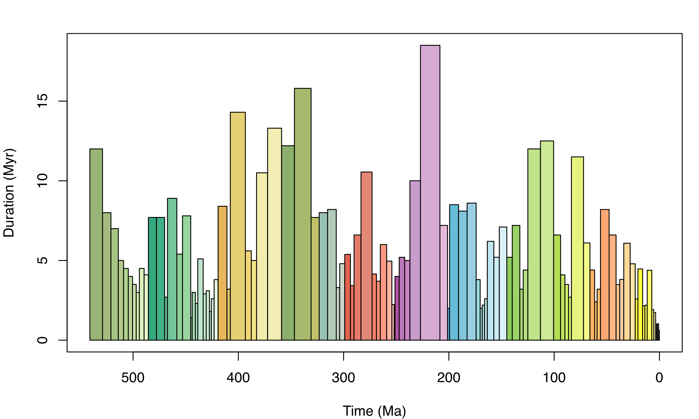

# Install palaeoverse (if required)
# install.packages("palaeoverse")
# Load palaeoverse
library(palaeoverse)Tutorial 2: Latitudinal trends in Phanerozoic reefs
r
data
explore
prepare
How did the latitudinal distribution of reefs change through time?
NotePackages used in this module
install.packages(c("palaeoverse"))Preamble
In this tutorial, you will use palaeoverse to explore latitudinal trends in Phanerozoic reefs.
Along the way, you will meet the functions you need for a typical palaeobiological workflow: exploring data, assigning a common time scale, binning occurrences, estimating palaeocoordinates, and summarising the results.
NoteHow exercises work
- Questions: work out your answer in R first, then click the “Answers” box beneath the questions to check it.
- Hints and solutions: click the boxes labelled “Hint” or “Solution” to reveal them, but make sure to try the task yourself first!
- Your turn: code chunks marked
___are incomplete. Replace each___before running them locally.
Introduction
Reefs, especially tropical coral reefs, are commonly thought to be highly sensitive to climate change (Kiessling, 2001; Perrin & Kiessling, 2010), and their distribution has been used to infer the latitudinal extent of tropical and subtropical climatic conditions in deep time.
As palaeobiologists we know that we cannot take the present-day distribution of fossil reef systems at face value–we must contend with the shift of the continents over geological timescales. Specifically, the geographic location of fossil occurrences on the Earth’s surface today does not necessarily represent their location in vivo; fossil remains found at tropical latitudes might have been deposited at temperate latitudes and vice versa.
As such, to be able to trace the latitudinal distribution of reefs in the geological past, we must reconstruct their past geographic distribution using a Global Plate Model. However, recent work has also demonstrated that there can be substantial differences between Global Plate Models in their palaeogeographic reconstructions, so we must also consider this uncertainty (Buffan et al., 2023).
Let’s start by loading palaeoverse:
The reefs dataset
In this tutorial, we will be using reefs for our analyses, a compilation of Phanerozoic reef occurrences (n = 4363) from the PaleoReefs Database (Kiessling & Krause, 2022).
NoteBuilt-in datasets
Recall from the introduction that functions in palaeoverse are designed around the assumption that your data are stored in an occurrence data.frame, which is the expected input for almost all functions. The package includes two example occurrence datasets from different data sources: tetrapods and reefs.
Load the reefs dataset:
# Load in-built dataset
data(reefs)Before conducting any analyses, it is always a good idea to explore your data and understand what you are working with:
# View the first six rows
head(reefs) r_number name formation system series
1 1 Tilkideligi Tepe Triassic Upper Triassic
2 2 Hydra Pantokrator Limestone Triassic Upper Triassic
3 3 Shiraho, W-Pacific Neogene Holocene
4 4 Aksu-Terziler area Triassic Upper Triassic
5 5 Adnet, Salzburg Triassic Upper Triassic
6 6 Rotelwand Triassic Upper Triassic
interval biota_main biota_sec lng lat country
1 lower Norian Calcisponges Stromatoporoids 30.3833 37.0333 Turkey
2 upper Carnian Corals Calcisponges 23.6333 37.3833 Greece
3 Recent Corals Algae 124.2500 24.3333 Pacific
4 Tuvalian Calcisponges Stromatoporoids 31.0333 37.8000 Turkey
5 upper Rhaetian Corals Calcisponges 13.1667 47.7000 Austria
6 Rhaetian Corals Calcisponges 13.1833 47.7000 Austria
authors
1 Riedel, P.
2 Schafer, P., Senowbari-Daryan, B.
3 Kayanne, H., Suzuki, A. & Saito, H.
4 Riedel, P.
5 Schafer, P.
6 Schafer, P.
title
1 Riffbiotope im Karn und Nor (Obertrias) der Tethys: Entwicklung, Einschnitte und Diversitatsmuster. -
2 The Upper Triassic Pantokrator Limestone of Hydra (Greece): An example of a prograding reef complex. -
3 Diurnal changes in the partial pressure of carbon dioxide in coral reef water. -
4 Riffbiotope im Karn und Nor (Obertrias) der Tethys: Entwicklung, Einschnitte und Diversitatsmuster. -
5 Fazielle Entwicklung und palokologische Zonierung zweier obertriadischer Riffstrukturen in den Nordlichen Kalkalpen (Oberrhat"-Riff-Kalke, Salzburg)
6 Fazielle Entwicklung und palokologische Zonierung zweier obertriadischer Riffstrukturen in den Nordlichen Kalkalpen (Oberrhat"-Riff-Kalke, Salzburg)
year
1 1990
2 1982
3 1995
4 1990
5 1979
6 1979# Look at the structure of the dataset
str(reefs)'data.frame': 4363 obs. of 14 variables:
$ r_number : chr "1" "2" "3" "4" ...
$ name : chr "Tilkideligi Tepe" "Hydra" "Shiraho, W-Pacific" "Aksu-Terziler area" ...
$ formation : chr "" "Pantokrator Limestone" "" "" ...
$ system : chr "Triassic" "Triassic" "Neogene" "Triassic" ...
$ series : chr "Upper Triassic" "Upper Triassic" "Holocene" "Upper Triassic" ...
$ interval : chr "lower Norian" "upper Carnian" "Recent" "Tuvalian" ...
$ biota_main: chr "Calcisponges" "Corals" "Corals" "Calcisponges" ...
$ biota_sec : chr "Stromatoporoids" "Calcisponges" "Algae" "Stromatoporoids" ...
$ lng : num 30.4 23.6 124.2 31 13.2 ...
$ lat : num 37 37.4 24.3 37.8 47.7 ...
$ country : chr "Turkey" "Greece" "Pacific" "Turkey" ...
$ authors : chr "Riedel, P." "Schafer, P., Senowbari-Daryan, B." "Kayanne, H., Suzuki, A. & Saito, H." "Riedel, P." ...
$ title : chr "Riffbiotope im Karn und Nor (Obertrias) der Tethys: Entwicklung, Einschnitte und Diversitatsmuster. -" "The Upper Triassic Pantokrator Limestone of Hydra (Greece): An example of a prograding reef complex. -" "Diurnal changes in the partial pressure of carbon dioxide in coral reef water. -" "Riffbiotope im Karn und Nor (Obertrias) der Tethys: Entwicklung, Einschnitte und Diversitatsmuster. -" ...
$ year : num 1990 1982 1995 1990 1979 ...Note the structure of the dataset: each row contains a unique occurrence and each column contains a unique variable. Details on the dataset (e.g. origin) are also available via the usual documentation call:
# Call documentation for dataset
?reefs
# You can also use
help(reefs)
CautionExercise 1: Get to know
reefs
Use nrow(), ncol(), and ?reefs to answer the following.
- How many rows does
reefshave? - How many columns does
reefshave? - What does each row of
reefsrepresent? - True or false: the
reefsdataset tells us how many species lived in each reef.
TipAnswers
- 4363
- 14
- A whole reef (an ecosystem).
- False. Each row describes a reef as a whole, not all the species within it.
Not bad, that is quite a bit of data to play with! Remember that these are reefs (whole ecosystems), not individual occurrences of fossil organisms like in the tetrapods dataset. But how does the number of occurrences vary across time? We can make use of the group_apply() wrapper function to run a function across subsets of data.
# Group by the interval column to calculate nrow x interval
reef_counts <- group_apply(reefs, group = "interval", fun = nrow)
head(reef_counts) nrow interval
1 2 (early?) Toarcian
2 1 Aalenian-Bajocian
3 4 Aalenian/Bajocian
4 1 Aalenian/lower Bajocian
5 1 Abadehian
6 6 Aeronian
CautionExercise 2: Spot the problem
- How many different interval names are there in
reefs? - Why is this a problem for counting reefs through time?
TipHint
group_apply() returns one row per group. How many groups did you get?
TipAnswers
- 782
- Intervals differ in resolution and naming scheme, so counts are not comparable.
Oh dear, we have just hit a common issue: our reef data do not conform to a common time scale. Some reefs are resolved to stage level, while others are resolved to a coarser or finer temporal resolution. In some instances, regional names are used, while international names are used in others. This makes comparisons through time challenging.
Assign common time scale
One solution would be to use age values to bin the reefs into time bins, but no numeric age range data are provided in the reefs dataset (i.e. max_age and min_age). We must therefore use the name of each interval to link to a common time scale: the international geological stages established by the International Commission on Stratigraphy (ICS).
Fortunately, we can make use of the look_up() function help us do this. It can assign international geological stages and numeric ages to occurrences, or use a user-defined interval key to link to a common time scale. Here, we can do the latter using the example interval_key available in palaeoverse.
Load interval_key:
# Load the interval key
data("interval_key")
# View first six rows
head(interval_key)
CautionExercise 3: Get to know
interval_key
- What columns does
interval_keycontain? - What is the source of
interval_key?
TipAnswers
- Use
colnames(interval_key): interval_name, early_stage, late_stage - Use
help(interval_key)or?interval_key: geowhen
Using interval_key, we can now assign international geological stages and numeric ages to our reefs dataset, using look_up:
# Assign a common time scale based on an interval key
reefs <- look_up(reefs,
early_interval = "interval",
late_interval = "interval",
int_key = interval_key)
# View first six rows
head(reefs)[, c("interval", "interval_max_ma", "interval_min_ma")] interval interval_max_ma interval_min_ma
1 lower Norian 227.0000 208.5
2 upper Carnian 237.0000 227.0
3 Recent 0.0117 0.0
4 Tuvalian 237.0000 227.0
5 upper Rhaetian 208.5000 201.3
6 Rhaetian 208.5000 201.3Great! We now have a common time scale and numeric ages. However, some of our reefs seem to range through several stages (e.g. “lower Norian”), so we cannot simply count by the early or late stage. Our data still need to be binned.
Let’s check out the time_bins() and bin_time() functions:
# Extract Phanerozoic stage-level time bins
bins <- time_bins(interval = "Phanerozoic", rank = "stage")
head(bins) bin interval_name rank max_ma mid_ma min_ma duration_myr abbr colour font
1 1 Fortunian stage 541.0 535.00 529.0 12.0 Fo #99B575 black
2 2 Stage 2 stage 529.0 525.00 521.0 8.0 S2 #A6BA80 black
3 3 Stage 3 stage 521.0 517.50 514.0 7.0 S3 #A6C583 black
4 4 Stage 4 stage 514.0 511.50 509.0 5.0 S4 #B3CA8E black
5 5 Wuliuan stage 509.0 506.75 504.5 4.5 Wul #B3D492 black
6 6 Drumian stage 504.5 502.50 500.5 4.0 Dr #BFD99D black
# Now we have numeric ages for our data, we can easily
# remove pre-Phanerozoic data to focus our study
reefs <- subset(reefs, interval_max_ma <= max(bins$max_ma))
# bin_time() defaults to "max_ma" and "min_ma" columns
# Rename columns in reefs
colnames(reefs)[which(colnames(reefs) == "interval_max_ma")] <- "max_ma"
colnames(reefs)[which(colnames(reefs) == "interval_min_ma")] <- "min_ma"Five methods exist in bin_time() for binning occurrence data. You can see details on each via ?bin_time:
# Bin by midpoint age
bin_time(reefs, bins = bins, method = "mid")
# Bin by overlap majority
bin_time(reefs, bins = bins, method = "majority")
# Bin into every bin within age range
bin_time(reefs, bins = bins, method = "all")
# Bin randomly into bins within age range (equal probability)
bin_time(reefs, bins = bins, method = "random", reps = 10)
# Bin randomly into bins within age range (uniform probability)
bin_time(reefs, bins = bins, method = "point", reps = 10)
CautionExercise 4: Choose a temporal binning method
Before we pick a method, let’s see how the choice affects the data.
# Your turn: bin the reefs using the "majority" method
reefs_majority <- bin_time(reefs, max_ma = ___, min_ma = ___, bins = ___, method = ___)
# How many rows does the result have?
nrow(___)- How many rows does
reefshave after binning withmethod = "majority"? - How many rows does
reefshave if we filter “overlap_percentage” to more than 50%? - Which method would you expect to increase the number of rows?
TipAnswers
- Trick question! It’s the same: 4335
- 3946
"all"
We will go with "all" for this tutorial:
reefs <- bin_time(reefs, bins = bins, method = "all")Note that the number of rows of reefs has now increased: the "all" method duplicates an occurrence for every bin its age range overlaps with.
How many rows did we gain?
reefs grew from 4335 to 6554 rows. Each extra row is a copy of a reef placed in an additional bin.
Let’s check those reef numbers through time again using our binned data:
# Count number of reefs per time bin
reefs_time <- group_apply(reefs, group = "bin_midpoint", fun = nrow)
# Make sure bins are in chronological order
reefs_time <- reefs_time[order(as.numeric(reefs_time$bin_midpoint)), ]
# Check output
head(reefs_time) nrow bin_midpoint
1 3 0.0021
2 3 0.0062
3 3 0.00995
4 117 0.07035
5 52 0.4515
6 34 1.287That is more like it! But let’s not forget it is always useful to visualise our data. Why don’t we plot the number of reefs through time? We can make use of the axis_geo() function to add the geological time scale to our plot:
# Plot data
plot(x = reefs_time$bin_midpoint,
y = reefs_time$nrow,
xlab = "Time (Ma)",
ylab = "Number of reefs per stage",
xlim = c(541, 0),
xaxt = "n",
type = "b", pch = 20)
# Add axis of the geological time scale
axis_geo(side = 1, intervals = "periods")
References
Buffan, L., Jones, L. A., Domeier, M., Scotese, C. R., Zahirovic, S., & Varela, S. (2023). Mind the uncertainty: Global plate model choice impacts deep‐time palaeobiological studies. Methods in Ecology and Evolution, 14(12), 3007-3019. DOI: 10.1111/2041-210X.14204
Kiessling, W. (2001). Paleoclimatic significance of Phanerozoic reefs. Geology, 29, 751–754. DOI: 10.1130/0091-7613(2001)029%3C0751:PSOPR%3E2.0.CO;2
Kiessling, W. & Krause, M. C. (2022). PaleoReefs Database (PARED) (1.0) [Data set]. DOI: 10.5281/zenodo.6037852.
Merdith, A., Williams, S. E., Collins, A. S., Tetley, M. G., Mulder, J. A., Blades, M. L., Young, A., Armistead, S. E., Cannon, J., Zahirovic, S., & Müller, R. D. (2021). Extending full-plate tectonic models into deep time: Linking the Neoproterozoic and the Phanerozoic. Earth-Science Reviews, 214, 103477. DOI: 10.1016/j.earscirev.2020.103477.
Perrin, C. & Kiessling, W. (2010). Latitudinal trends in Cenozoic reef patterns and their relationship to climate. Carbonate Systems during the Oligocene–Miocene Climatic Transition, 17–33. DOI: 10.1002/9781118398364.ch2
Scotese, C. & Wright, N. M. (2018). PALEOMAP Paleodigital Elevation Models (PaleoDEMs) for the Phanerozoic. PALEOMAP Project.
Wright, N., Zahirovic, S., Müller, R. D., & Seton, M. (2013). Towards community-driven paleogeographic reconstructions: integrating open-access paleogeographic and paleobiology data with plate tectonics. Biogeosciences, 10(3), 1529–1541. DOI: 10.5194/bg-10-1529-2013.
Session info
─ Session info ───────────────────────────────────────────────────────────────
setting value
version R version 4.6.2 (2026-10-29)
os Ubuntu 26.04.1 LTS
system x86_64, linux-gnu
ui X11
language (EN)
collate C.UTF-8
ctype C.UTF-8
tz UTC
date 2026-11-03
pandoc 3.7.0.2 @ /usr/bin/pandoc
quarto 1.11.9 @ /usr/local/bin/quarto
─ Packages ───────────────────────────────────────────────────────────────────
! package * version date (UTC) lib source
ape 5.8-1 2024-12-16 [1] RSPM
askpass 1.2.1 2024-10-04 [1] RSPM
class 7.3-24 2026-08-03 [2] CRAN (R 4.6.2)
classInt 0.4-11 2025-01-08 [1] RSPM
cli 3.6.6 2026-04-09 [1] RSPM
R cpp11 <NA> <NA> [?] <NA>
curl 8.1.0 2026-10-14 [1] RSPM
DBI 1.3.0 2026-02-25 [1] RSPM
digest 0.6.39 2025-11-19 [1] RSPM
dplyr 1.2.1 2026-04-03 [1] RSPM
e1071 1.7-17 2025-12-18 [1] RSPM
generics 0.1.4 2025-05-09 [1] RSPM
geojsonsf 2.0.5 2025-11-26 [1] RSPM
R geometries <NA> <NA> [?] <NA>
geosphere 1.6-8 2026-04-05 [1] RSPM
glue 1.8.1 2026-04-17 [1] RSPM
h3jsr 1.3.1 2023-01-21 [1] RSPM
httr 1.4.9 2026-09-01 [1] RSPM
R jsonify <NA> <NA> [?] <NA>
jsonlite 2.0.0 2025-03-27 [1] RSPM
KernSmooth 2.23-27 2026-08-12 [2] CRAN (R 4.6.2)
lattice 0.23-1 2026-08-12 [2] CRAN (R 4.6.2)
lifecycle 1.0.5 2026-01-08 [1] RSPM
magrittr 2.0.5 2026-04-04 [1] RSPM
mime 0.13 2025-03-17 [1] RSPM
nlme 3.1-171 2026-09-01 [2] CRAN (R 4.6.2)
openssl 2.5.0 2026-11-02 [1] RSPM
palaeoverse 1.5.0 2026-06-11 [1] RSPM
pbapply 1.7-5 2026-09-01 [1] RSPM
pillar 1.11.1 2025-09-17 [1] RSPM
pkgconfig 2.0.3 2019-09-22 [1] RSPM
proxy 0.4-29 2025-12-29 [1] RSPM
purrr 1.2.2 2026-04-10 [1] RSPM
R6 2.6.1 2025-02-15 [1] RSPM
R rapidjsonr <NA> <NA> [?] <NA>
Rcpp 1.1.2 2026-07-05 [1] RSPM
rlang 1.3.0 2026-07-05 [1] RSPM
s2 1.1.13 2026-09-28 [1] RSPM
sf 1.1-3 2026-09-11 [1] RSPM
R sfheaders <NA> <NA> [?] <NA>
stringdist 0.9.17 2026-01-16 [1] RSPM
stringi 1.8.9 2026-08-04 [1] RSPM
stringr 1.6.0 2025-11-04 [1] RSPM
sys 3.4.3 2024-10-04 [1] RSPM
tibble 3.3.1 2026-01-11 [1] RSPM
tidyr 1.3.2 2025-12-19 [1] RSPM
tidyselect 1.2.1 2024-03-11 [1] RSPM
units 1.0-1 2026-03-11 [1] RSPM
utf8 1.2.6 2025-06-08 [1] RSPM
V8 8.2.1 2026-10-26 [1] RSPM
vctrs 0.7.3 2026-04-11 [1] RSPM
withr 3.0.3 2026-06-19 [1] RSPM
wk 0.9.5 2025-12-18 [1] RSPM
[1] /home/runner/work/_temp/Library
[2] /opt/R/4.6.2/lib/R/library
R ── Package was removed from disk.
──────────────────────────────────────────────────────────────────────────────